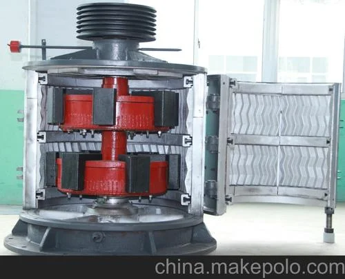

| 型号 | 耐磨件 |
|---|---|
| 型号 | VSI5X, VSI6X |
| 耐磨件 | Rotor tips, Impact plates |
采用优质耐磨合金制造，包括高锰钢、铬钼合金钢和高铬铸铁。
VSI5X, VSI6X
抛料头、冲击板
SBM VSI5X/VSI6S系列高速磨损元件；加速物料进行石打石整形制砂
| Grade | WC | Co | Other |
|---|---|---|---|
| WC-Co Cemented Carbide | 84-89% | 11-16% | ≤1% |
极端硬度用于HPGR辊钉和VSI转子抛料头；纯磨粒磨损下寿命比Cr26高5-10倍；安装需注意防止热冲击
| Grade | C | Si | Mn | Cr | Mo | Ni |
|---|---|---|---|---|---|---|
| Cr26 | 2.0-3.3 | ≤1.0 | 0.5-1.5 | 23.0-30.0 | 1.0-3.0 | ≤1.5 |
M7C3碳化物网络提供卓越耐磨性；纯磨粒磨损下寿命比锰钢高3-5倍；适用于立磨辊套和VSI转子
SBM VSI砧板用于石打铁破碎；Cr26选项实现最大耐磨性
| Grade | C | Si | Mn | Cr | Mo |
|---|---|---|---|---|---|
| Cr20 | 2.0-3.3 | ≤1.2 | ≤1.5 | 18.0-23.0 | ≤3.0 |
高硬度兼顾中等韧性；反击破板锤和锤头优异选择
| Grade | C | Si | Mn | Cr | Mo |
|---|---|---|---|---|---|
| Cr26 | 2.0-3.3 | ≤1.2 | ≤1.5 | 23.0-30.0 | ≤2.0 |
最高硬度抗磨料磨损；细碎和研磨低冲击工况最佳
VSI分配锥将物料导入转子进行离心加速
| Grade | C | Si | Mn | Cr | Mo |
|---|---|---|---|---|---|
| Cr15 | 2.0-3.3 | ≤1.2 | ≤1.5 | 13.0-18.0 | ≤3.0 |
硬度韧性均衡；中等冲击工况通用选择
| Grade | C | Si | Mn | Cr | Mo |
|---|---|---|---|---|---|
| Cr20 | 2.0-3.3 | ≤1.2 | ≤1.5 | 18.0-23.0 | ≤3.0 |
高硬度兼顾中等韧性；反击破板锤和锤头优异选择